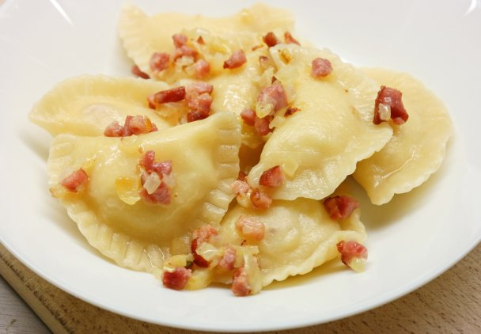

Potato and Cheese Pierogi

Description
This pierogi recipe for Polish dumplings has been a family favorite from generation to generation. We traditionally make these for Christmas, but they can be made for any special event. There's some work involved, but the outcome is rewarding! The boiled pierogies can be fried in butter and onions or served with sour cream.
Ingredients
Filling
- ⅓ (15 ounce) containers farmer's cheese
- 7 potatoes, peeled and boiled
- 3 tablespoons vegetable oil, or as needed
- 2 ½ cups mushrooms, peeled and sliced
- 3 onions, chopped
- 1 tablespoon sour cream
- salt and ground black pepper to taste
Dough
- 8 cups all-purpose flour, or more as needed
- 2 eggs
- 6 tablespoons unsalted butter, room temperature
- 2 cups lukewarm water
Directions
- Pass farmer's cheese and cooked potatoes separately through a food grinder or food processor.
- Heat oil in a large skillet over medium heat and cook mushrooms and onions until soft, about 15 minutes. Remove from heat.
- Combine farmer's cheese, potatoes, mushroom mixture, sour cream, salt, and pepper in a bowl. Mix together and set filling aside.
- Place flour on a clean work surface and make a well in the center. Crack both eggs into the well. Add butter and a few tablespoons of the warm water. Mix with your hands, gradually adding more warm water, 1 tablespoon at a time, as you go. Knead well, continuing to add more water as needed. Knead until dough is soft and smooth, adding more flour to the work surface as needed.
- Cut off 1/4 of the dough and roll out to a thickness of 1/8 inch. Cut out circles using a glass or a round pastry cutter, saving the excess dough for your next batch..
- Fill each dough circle with 1 teaspoon of filling. Fold dough over into a half-moon shape and pinch edges together to seal. Cover with a clean dish towel so pierogi won't dry out and repeat with remaining dough and filling.
- Bring a large pot of salted water to a gentle boil. Add the pierogi in batches, about 20 at a time, and cook until they float to the surface, 10 to 15 minutes. Remove with a slotted spoon and drain in a strainer. Repeat with the remaining pierogi.